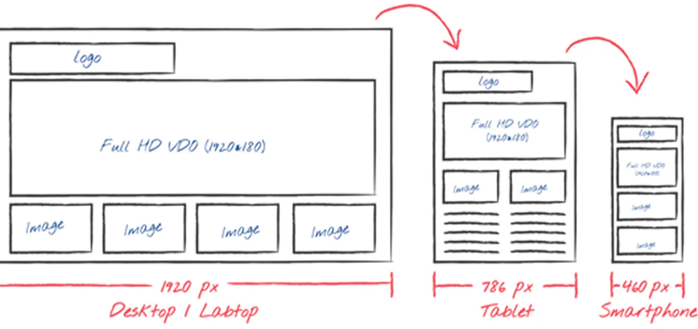

Summary
The 30-second version
Problem
Medical leave and accommodation rules (FMLA, ADA, PWFA, state laws) made the product slow to learn and easy to get wrong.
Approach
Mapped the end-to-end case journey, then rebuilt intake as a guided flow and gave case managers a deadline-first dashboard.
Outcome
30% less training time, 25% faster user flows and 15% shorter case resolution.
Context
When an employee needs medical leave, every delay matters
AbsenceSoft helps US employers manage absence, leave and accommodation. Behind every case there is a person dealing with surgery, a chronic condition, pregnancy or caring for a sick family member, and an HR or benefits professional trying to apply overlapping federal and state rules correctly.
The existing interface exposed that complexity directly. New case managers needed about a week of training before they could handle cases on their own. Forms showed every field regardless of leave type, and nobody could see where a request was in the approval chain.
How might we help case managers handle sensitive medical leave and accommodation requests quickly and correctly, without needing to be compliance experts?
Design process
A double-diamond process for a regulated domain
Two rounds of diverging and converging: first to understand the leave and accommodation rules and the people behind each case, then to shape and validate the solution.
Discover
Interviews and contextual walkthroughs with case managers, HR and compliance; support-ticket review.
Define
End-to-end case journey, personas and a rules matrix for FMLA, ADA, PWFA and state laws.
Develop
Hand sketches and co-design sessions; guided intake and dashboard concepts.
Deliver
Wireframes, hi-fi prototypes, usability testing and design-system handoff.
Domain landscape
Designing inside a regulated healthcare-adjacent space
Before designing screens I mapped the rules the product had to respect, so each design decision could be traced back to a regulation or a user need.
Research
Who we designed for
I ran interviews and contextual walkthroughs with HR generalists, benefits administrators, case managers and compliance officers across several client tenants, and reviewed support tickets to find recurring failure points.
Case manager
- Handles 40+ open cases
- Lives by deadlines
- Fears missing a certification date
Benefits administrator
- Configures policies per tenant
- Answers "am I eligible?"
- Needs audit-ready records
Employee on leave
- Often unwell or stressed
- Wants status and next steps
- Doesn't know the legal terms
Key insights
Legal jargon blocked people
Terms like "intermittent leave" and "reduced schedule" confused most users we spoke to, internal staff included.
Too much on one screen
Intake showed 15+ fields regardless of leave type, which led to wrong entries and rework.
No sense of status
Neither managers nor employees could see where a request stood, so they chased updates by email and phone.
Deadlines lived in spreadsheets
Case managers tracked certification and recertification dates outside the product.
Low-fidelity wireframes
Greyscale wireframes of every key screen
The case-manager dashboard was wireframed at full fidelity of layout, panel for panel, so every widget earned its place before colour and type were applied.
01Case-manager dashboard
Solution
A guided intake and a deadline-first workspace
1. Guided case intake
I replaced the long intake form with a four-step flow that shows only the fields that apply to the leave type chosen, written in plain language with legal terms explained inline.
Reason
Own health, family care, pregnancy or accommodation, in plain language.
Eligibility
Tenure and hours are checked automatically, and the result is explained.
Dates & documents
Continuous or intermittent leave, plus the medical certification upload.
Review
A summary of entitlements, next steps and due dates.
2. Case manager dashboard
Upcoming deadlines, pending approvals and compliance rate come first. A leave-density heatmap helps managers plan cover, and every case shows its stage in the approval chain.

3. Early sketches
I explored the flows in low-fidelity sketches with case managers before moving to high-fidelity prototypes.

Before
- 15+ fields on one screen
- Legal terms, no explanation
- Deadlines tracked in spreadsheets
- Status updates chased by email
After
- Four steps, only relevant fields
- Plain language with inline help
- Deadlines and alerts on the dashboard
- Visible approval stage on every case
Accessibility & trust
Designing for people who may be unwell
Accessible by default
WCAG 2.1 AA contrast, keyboard paths through the whole intake flow, and labels screen readers can follow.
Privacy of health data
Role-based visibility, so diagnoses stay hidden from people who only need to know dates and status.
Calm tone
Supportive, plain microcopy for employees, with no legal threats in error messages.
Results
Measurable impact
Figures measured by the product team after release, comparing against the previous version.
My role
What I owned
I was the lead experience designer, working with a product owner, a compliance SME and an Angular engineering team. I owned research planning, journey mapping, information architecture, interaction design and prototypes, and worked with engineering on a reusable component set for future features.
Reflection
What I learned
- Compliance doesn't have to mean complexity. Turning each rule into a single question made the regulations easier to follow.
- In healthcare-adjacent products, tone is part of the UX. Many of the people filling in the forms were going through a hard time.
- Deadlines are the real interface. Case managers needed a clear view of what was due, more than another data table.